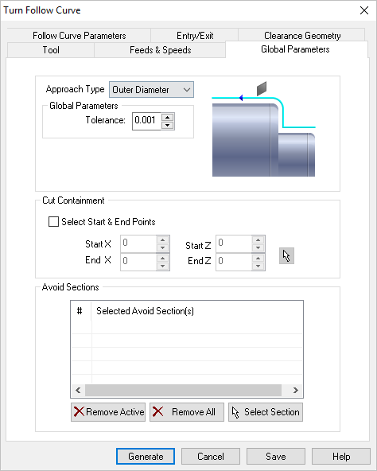
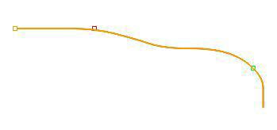
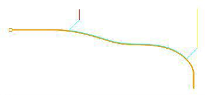
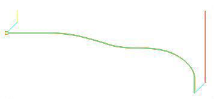

The following dialog allows you to set Global Parameters for Turn Follow Curve operations. You can set the Approach Type, Global Parameters and Cut Containment via this property page.
 Dialog Box: Global Parameters tab, Turn Follow Curve |
Approach Type Allows user to choose between Outer Diameter (OD), Front Facing and Inner Diameter (ID). The toolpaths are generated for the selected approach types. In rouging and finishing operations, for tools with OD orientation, the approach type can be set to Outer Diameter or Front Facing. For tools with ID orientation, the approach type is automatically set to Inner Diameter. Global Parameters section allows you to set the tolerance value to be used in machining. A uniform thickness or stock that needs to be left around the part can be specified here. Tolerance This is the allowable deviation from the actual part geometry plus the Stock layer (if any). Stock (Roughing Operations Only) This is the layer of material that will remain around the part after the toolpath is completed. Generally Roughing operations leave a thin layer of stock, unlike finishing operations where this value is usually set to zero. |
This allows you to select an area to contain the toolpath. This is useful in cases where a section of the part needs to be machined. This is done by selecting the check box for Select containment Start & End points.
You can either input the X and Z coordinate values that represent 2 corners of a containment rectangle or use the pick option to graphically select 2 corners of a rectangle for containment.
|

The start and end points are displayed on the part geometry. The start point is represented in Green color and end point in Red.  Cut Containment Examples for Turn Follow Curve The finishing toolpath is contained between start and end points and cut direction of the toolpath is from the start to end point. The selection of start and end points can also be used to determine the cut direction.  Cut Containment Examples for Turn Follow Curve If a containment is not specified, the follow curve toolpath is generated for the turn part geometry based on the approach type and the part geometry.  Cut Containment Examples for Turn Follow Curve |
This allows user to select areas to be excluded from the turn part geometry for toolpath computation. This is done by selecting 2 points on the part geometry. A line is inserted between the 2 selected points as avoid region and this now becomes part of your turn part geometry. One or more avoid areas can be selected.
|